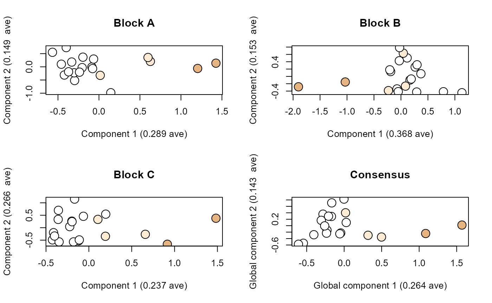

Constructing a morphospace for a partial-wing skeleton
Daniel B. Thomas
2021-08-31
penguinWings.Rmd
Overview
The multi-part objects in this example are partial wing skeletons comprised of humerus, radius and ulna. These partial wing skeletons are from 15 extant species of penguin and five fossil species of penguin, which together constitute a dataset of 60 wing bones (Table 1).
readPts with gpa = FALSE (i.e. generalized Procrustes transformation not performed) and are available by calling morphoBlocks. The function readPts is a wrapper for the read.pts and cSize functions from Morpho (Schlager 2017). First, load the dataset:
The analysis in this example will use the mean values of the three replicate landmark configurations from each part. Creating these averaged values requires averaging the configurations stored in the @raw term of their respective block-class objects.
# Extract and average the landmark configurations
hum_av <- (hum1@raw + hum2@raw + hum3@raw)/3
rad_av <- (rad1@raw + rad2@raw + rad3@raw)/3
uln_av <- (uln1@raw + uln2@raw + uln3@raw)/3
Prepare data blocks for analysis
Each set of averaged landmarks can now be formatted into a data block with the formatBlock function. Here, we will use the @curves term from one of the replicates, and will set gpa = TRUE to perform generalized Procrustes transformation on the landmark configurations. generalized Procrustes transformation is performed using gpagen from geomorph (Adams and Otarola-Castillo, 2013), which is called by formatBlock.
# Format the averaged landmark configurations into data blocks
block1 <- formatBlock(hum_av, curves = hum1@curves, k = 3, gpa = TRUE)
block2 <- formatBlock(rad_av, curves = rad1@curves, k = 3, gpa = TRUE)
block3 <- formatBlock(uln_av, curves = uln1@curves, k = 3, gpa = TRUE)
The three data blocks of Procrustes-transformed configurations (humerus, radius, ulna) are organised into a list of data blocks and scaled using the normalised weighted centroid size method from Collyer et al. (2020).
# Scale and combine data blocks into a single list of blocks
blocklist <- combineBlocks(blocks = c(block1, block2, block3))
Analyse list of blocks
The scaled data blocks are analysed with regularised consensus principal component analysis (RCPCA) in mode 2 using the rgcca function from RGCCA (Tenenhaus and Guillemot, 2017), which is called by analyseBlocks when option = "rcpca".
# Analyse the list of data blocks using RCPCA
result <- analyseBlocks(blocklist, ncomp = 10)
Plot results
Use scoresPlot to show the consensus space from the analysis, which here represents a morphospace for the partial-wing skeleton.
# Setup colour vector to show different ages of fossil penguins. Paleocene (brown),
# stem-lineage penguins from the Oligocene (light brown), and extant penguins (white).
pcol <- c("#ffffff", "#ffffff", "#ffffff", "#ffffff", "#e6b481", "#ffffff", "#ffffff", "#ffffff",
"#ffffff", "#ffffff", "#ffffff", "#ffffff", "#ffffff", "#ffffff", "#feebd3", "#feebd3",
"#ffffff", "#e6b481", "#feebd3", "#ffffff")
# Plot consensus space showing global component one (GC1) and global component two (GC2)
scoresPlot(result, pcol = pcol)
Use loadingsPlot to show the loadings for global component one of the analysis. Global component loadings are visualised by colouring the mean position of each landmark in each block. Stronger orange colours represent landmarks with larger loadings (i.e. greater amounts of variation), and stronger blue colours represent landmarks with weaker loadings. Each data block is plotted as a separate panel.
# Plot loadings for global component one (GC1)
loadingsPlot(result, cex.3d = 15)
Data sources
| Accession | Genus | Species | Age | Humerus | Radius | Ulna | Institution |
|---|---|---|---|---|---|---|---|
| AV19569 | Aptenodytes | forsteri | Extant | Right | Left | Right | CM |
| 2013-1-257 | Aptenodytes | patagonicus | Extant | Left | Right | Right | CM |
| OR.019303 | Eudyptes | filholi | Extant | Right | Right | Right | NMNZ |
| OR.017176 | Eudyptes | pachyrhynchus | Extant | Right | Left | Left | NMNZ |
| OR.030196 | Eudyptes | robustus | Extant | Right | Right | Right | NMNZ |
| OR.027787 | Eudyptes | schlegeli | Extant | Right | Right | Right | NMNZ |
| OR.025560 | Eudyptes | sclateri | Extant | Right | Right | Right | NMNZ |
| OR.018965 | Eudyptula | minor | Extant | Left | Left | Left | NMNZ |
| OR.026794 | Megadyptes | antipodes | Extant | Right | Right | Right | NMNZ |
| AV38751 | Pygoscelis | adeliae | Extant | Left | Left | Left | CM |
| AV32995 | Pygoscelis | antarctica | Extant | Right | Right | Right | CM |
| AV38694 | Pygoscelis | papua | Extant | Right | Right | Right | CM |
| OR.022800 | Spheniscus | demersus | Extant | Right | Right | Right | NMNZ |
| CU2138 | Spheniscus | humboldti | Extant | Right | Right | Right | UC |
| OR.027329 | Spheniscus | magellanicus | Extant | Right | Right | Right | NMNZ |
| OR.01451 | Platydyptes | novaezeelandiae | 27.3-21.7 Ma | Left | Right | Left | NMNZ |
| GL407 | Archaeospheniscus | lowei | 29.8-25.2 Ma | Right | Right | Right | OM |
| OU22065 | Kairuku | grebneffi | 29.8-25.20 Ma | Right | Right | Right | OU |
| CM 2016.6.1 | Sequiwaimanu | rosieae | 61 Ma | Left | Left | Right | CM |
| OU12651 | Muriwaimanu | tuatahi | 61.3-56.0 Ma | Right | Left | Left | OU |
| Note: | |||||||
| Institution abbreviations: CM, Canterbury Museum, Christchurch, New Zealand. NMNZ, Museum of New Zealand Te Papa Tongarewa, Wellington, New Zealand. OM, Otago Museum, Dunedin, New Zealand. UC, University of Canterbury, Christchurch, New Zealand (specimen held at OU, Geology Museum, University of Otago, Dunedin, New Zealand). Specimen ages from or compiled by Slack et al. (2006), Ksepka and Ando (2011), and Ksepka et al. (2012) and literature reviewed therein. |
References
Adams, D. C., Otarola-Castillo, E. (2013). Geomorph: An R package for the collection and analysis of geometric morphometric shape data. Methods in Ecology and Evolution, 4, 393-399. https://doi.org/10.1111/2041-210x.12035
Collyer, M. L., Davis, M. A., Adams, D. C. (2020). Making heads or tails of combined landmark configurations in geometric morphometric data. Evolutionary Biology, 47, 193-205. https://doi.org/10.1007/s11692-020-09503-z
Ksepka, D. T., Ando, T. (2011). Penguins past, present, and future: Trends in the evolution of the Sphenisciformes. In G. Dyke, G. Kaiser (Ed.), Living Dinosaurs: The Evolutionary History of Modern Birds, First Edition (pp. 155-186). John Wiley and Sons.
Ksepka, D. T., Fordyce, R. E., Ando, T., Jones, C. M. (2012). New fossil penguins (Aves, Sphenisciformes) from the Oligocene of New Zealand reveal the skeletal plan of stem penguins. Journal of Vertebrate Paleontology, 32, 235-254. https://doi.org/10.1080/02724634.2012.652051
Schlager, S. (2017). Morpho and Rvcg - Shape Analysis in R. In G. Zheng, S. Li and G. Szekely (Ed.), Statistical shape and deformation analysis (pp. 217-256). Academic Press.
Slack, K. E., Jones, C. M., Ando, T., Harrison, G. L., Fordyce, R. E., Arnason, U., Penny, D. (2006). Early penguin fossils, plus mitochondrial genomes, calibrate avian evolution. Molecular Biology and Evolution, 23, 1144-1155. https://doi.org/10.1093/molbev/msj124
Tenenhaus, A., Guillemot, V. (2017). RGCCA: Regularized and Sparse Generalized Canonical Correlation Analysis for multiblock data 2.1.2. https://CRAN.R-project.org/package=RGCCA.